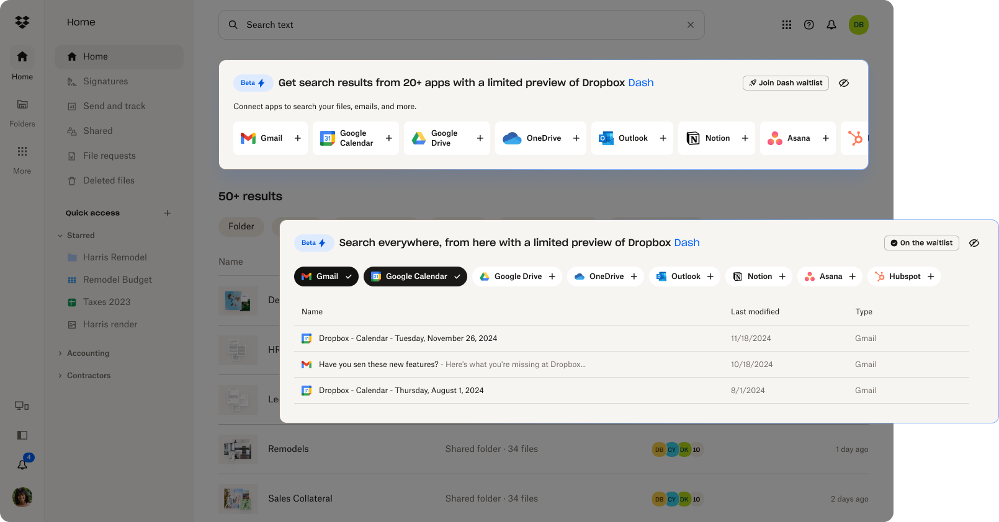

Key outcomes
- Within a 2-week sprint:
- 6x in impressions for Dash limited preview
- 2x in the primary success metrics (“Join waitlist” CTR)
My role
Product designer
(Project team: product manager, product designer (me), engineer, data scientist)
Timeline
Q3 2024
Project context
Launched in October 2024, Dropbox Dash for Business is an AI-powered universal search tool designed to help companies find, organize, and protect documents and content.
This project focused on user acquisition by integrating a limited Dash preview into Dropbox’s core product, drawing existing Dropbox users to one of Dash's key features. The overarching goal was to identify qualified team leads and connect them with sales representatives.
In addition to designing how users would interact with the Dash limited preview on the search engine results page (SERP), I navigated various technical constraints due to the feature’s beta status. This helped reduce drop-offs and ensured a smooth user experience despite the limitations.
The problem
How might we spark user interest in Dash universal search while navigating technical constraints
While porting a snippet of Dash features to Dropbox's SERP may sound fun and simple, it’s more complex than it appears. The design challenge lies in organically integrating two search engines — Dash search and Dropbox search — while making Dash search compelling to users. Additionally, there’s the technical hurdle of Dash’s app syncing and searching process being time-consuming, which increases the risk of user drop-off. Hence, my primary focus in this project was to keep users engaged with the Dash limited preview, boost "Join waitlist" clicks, and smooth out the experience to minimize the impact of these technical constraints.
It's important because...
If we don’t capture users’ attention immediately or if the search results aren’t satisfying, users are unlikely to stay or engage with Dash. To spark their interests and acquire potential users, it’s crucial to deliver a seamless user experience and a strong first impression of Dash search.
Solution
✧ Streamlined two-step setup to help users quickly access universal search results
To increase discoverability of the Dash limited preview, I designed the “connector” step that shows up before search results. This step allows users without any connected apps to easily add their favorite apps and explore Dropbox Dash.
Not only did this design enhance the user experience, but it also significantly boosted impressions and drove a notable increase in waitlist sign-ups.

✧✧ Enhanced visual design to showcase the value of Dropbox Dash universal search
After the first MVP experiment tested different layouts for search results, I refreshed the visual design of the Dash limited preview section in the following sprint. The new design made the section more visually appealing and easier to digest.
By incorporating animated product assets, I implemented a Dash introduction modal that appears when users connect to a third-party app for the first time. This helped users quickly understand how the universal search works and what its capabilities are.
The updated visual design not only made the section more eye-catching but also improved the information hierarchy, clarity, and visual coherence on the SERP. The visual refresh delivered a sleek first impression, reinforcing Dash universal search as a valuable and premium feature.
Retro
The first glance is crucial — the feature preview and waitlist signups has no direct connection
When it comes to acquiring users, you might think that having a stellar feature is the key to success, but that’s not always the case. While it feels instinctive to showcase the best and brightest aspects of a product, our experiment revealed that signups and the quality of the limited preview aren’t necessarily linked. What’s surprising is that many users jumped on board without even “trying” the limited preview. Instead, helping users “see” the value of the product seems to be the real secret sauce for driving signups.
Fast iterations mean you can’t juggle everything at once
Planning design changes during fast design sprints is truly an art form. As we build and iterate on the limited preview, you may notice that we began with very basic designs. While they might not look particularly polished, testing ideas with an MVP design is important. This approach helps us avoid pouring too much effort into something that might not resonate. Once we gather some initial signals and direction, we then focus on refining the experience and creating a more polished version in the second round.
This isn't the full story. Want to read more?
The design process and the experimentation plan next... Contact me for the full case study.